Over-representation analysis
Over-representation (or enrichment) analysis is a statistical method that determines whether genes from pre-defined sets (e.g. those belonging to a specific GO term or KEGG pathway) are present more than would be expected (over-represented) in a subset of your data. In this case, the subset is your set of under- or over-expressed genes.
For example, the fruit fly transcriptome has about 10,000 genes. If 260 genes are categorized as “axon guidance” (2.6% of all genes carry that category), and in an experiment we find 1,000 genes are differentially expressed and 200 of those genes are in the “axon guidance” category (20% of DE genes), is that significant?
This page describes the implementation of over-representation analysis
using the clusterProfiler package. It is run downstream of a
differential expression analysis (e.g. with DESeq2).
Full clusterProfiler documentation:
clusterProfiler vignette.
Note
An R Markdown notebook covering this workflow is available at gencorefacility/r-notebooks/ora.Rmd.
Workflow overview
Load
clusterProfilerand the organism-specific annotation database.Read the differential-expression results and build a sorted, named vector of log2 fold-changes (the gene universe) and a filtered vector of significant DE genes.
Run
enrichGOto test for GO-term over-representation.Visualize the GO results (upset, wordcloud, barplot, dotplot, enrichment map, induced graph, category netplot).
Convert gene IDs and run
enrichKEGGfor KEGG pathway over-representation.Visualize the KEGG results and render an enriched pathway with
pathview.
Environment
This is an R workflow. Install clusterProfiler, pathview, and
wordcloud once, then load them at the start of each session.
BiocManager::install("clusterProfiler", version = "3.8")
BiocManager::install("pathview")
install.packages("wordcloud")
library(clusterProfiler)
library(wordcloud)
Inputs
You need:
A differential expression results CSV (
drosphila_example_de.csvin the examples below), typically produced by a tool such as DESeq2. At minimum it must contain a gene-ID column, alog2FoldChangecolumn, and apadjcolumn.An organism annotation database matched to the gene IDs in that CSV. The examples here use D. melanogaster and
org.Dm.eg.db.
Annotation database
Install and load the annotation package for your organism. See the full list at Bioconductor OrgDb packages (there are 19 presently available).
organism = "org.Dm.eg.db"
BiocManager::install(organism, character.only = TRUE)
library(organism, character.only = TRUE)
Prepare input
Read the DESeq2 output and build two vectors: the full gene universe (named, sorted log2 fold-changes) and the filtered set of significant DE genes (gene names only).
# reading in input from deseq2
df = read.csv("drosphila_example_de.csv", header=TRUE)
# we want the log2 fold change
original_gene_list <- df$log2FoldChange
# name the vector
names(original_gene_list) <- df$X
# omit any NA values
gene_list <- na.omit(original_gene_list)
# sort the list in decreasing order (required for clusterProfiler)
gene_list = sort(gene_list, decreasing = TRUE)
# Extract significant results (padj < 0.05)
sig_genes_df = subset(df, padj < 0.05)
# From significant results, we want to filter on log2 fold change
genes <- sig_genes_df$log2FoldChange
# Name the vector
names(genes) <- sig_genes_df$X
# omit NA values
genes <- na.omit(genes)
# filter on min log2 fold change (log2FoldChange > 2)
genes <- names(genes)[abs(genes) > 2]
GO enrichment
Run enrichGO to test whether GO terms are over-represented among
the significant DE genes, using the full gene universe as background.
Parameters
Ontology Options: "BP" (Biological Process), "MF"
(Molecular Function), "CC" (Cellular Component).
keyType This is the source of the annotation (gene IDs). The options vary for each annotation. In the example of org.Dm.eg.db, the options are:
"ACCNUM""ALIAS""ENSEMBL""ENSEMBLPROT""ENSEMBLTRANS""ENTREZID""ENZYME""EVIDENCE""EVIDENCEALL""FLYBASE""FLYBASECG""FLYBASEPROT""GENENAME""GO""GOALL""MAP""ONTOLOGY""ONTOLOGYALL""PATH""PMID""REFSEQ""SYMBOL""UNIGENE""UNIPROT"
Check which options are available with the keytypes command, for
example keytypes(org.Dm.eg.db).
Create the enrichGO object
go_enrich <- enrichGO(gene = genes,
universe = names(gene_list),
OrgDb = organism,
keyType = 'ENSEMBL',
readable = T,
ont = "BP",
pvalueCutoff = 0.05,
qvalueCutoff = 0.10)
Visualizations
Upset plot
Emphasizes the genes overlapping among different gene sets.
BiocManager::install("enrichplot")
library(enrichplot)
upsetplot(go_enrich)
{kind=link}
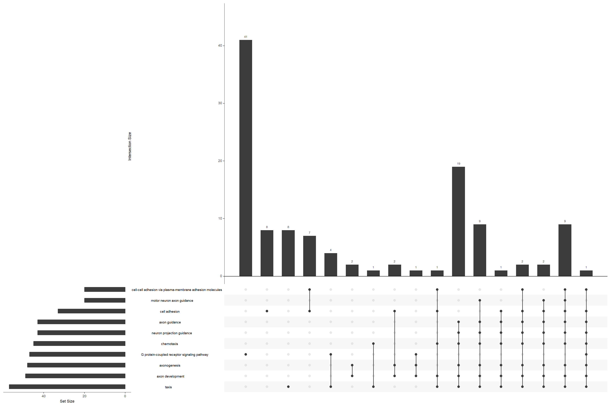
Upset plot of GO-term over-representation, highlighting gene overlap between enriched sets.
Wordcloud
wcdf <- read.table(text = go_enrich$GeneRatio, sep = "/")[1]
wcdf$term <- go_enrich[,2]
wordcloud(words = wcdf$term, freq = wcdf$V1, scale=(c(4, .1)),
colors = brewer.pal(8, "Dark2"), max.words = 25)
{kind=link}
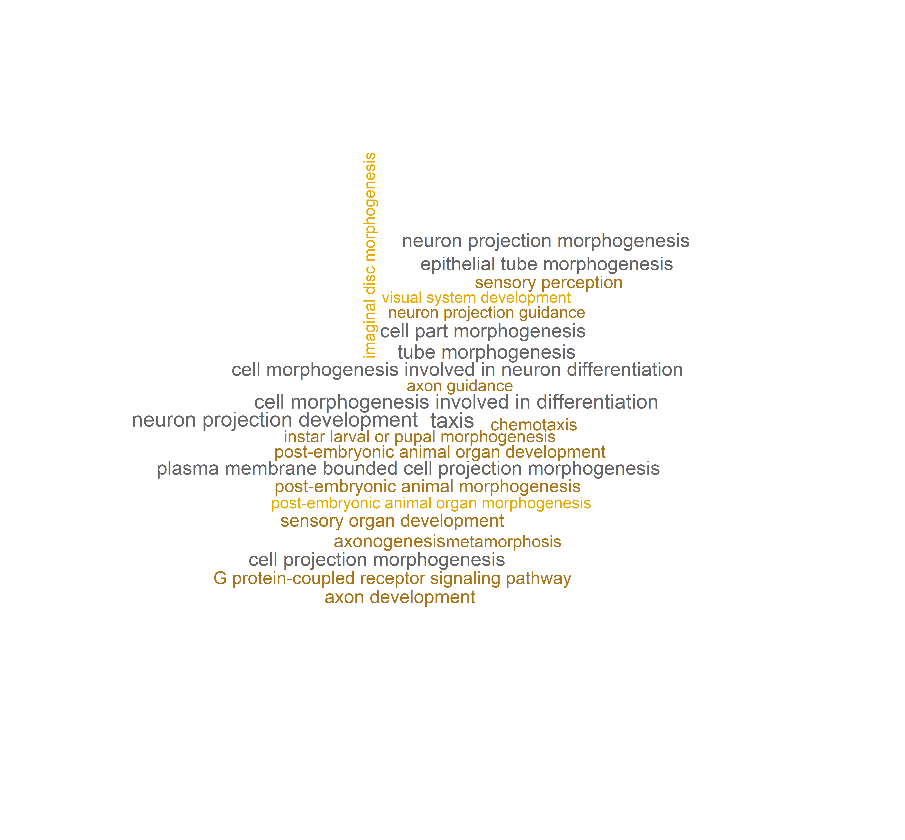
Wordcloud of the top 25 enriched GO terms, sized by the numerator of each term’s gene ratio.
Barplot
barplot(go_enrich,
drop = TRUE,
showCategory = 10,
title = "GO Biological Pathways",
font.size = 8)
{kind=link}
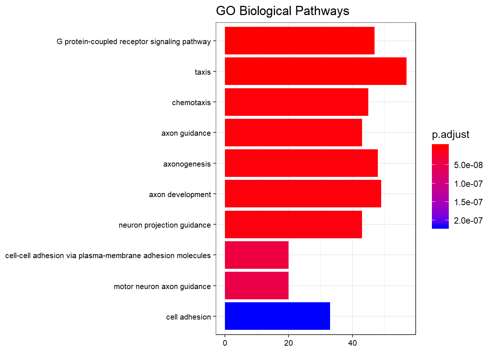
Top 10 enriched GO biological-process terms by adjusted p-value.
Dotplot
dotplot(go_enrich)
{kind=link}
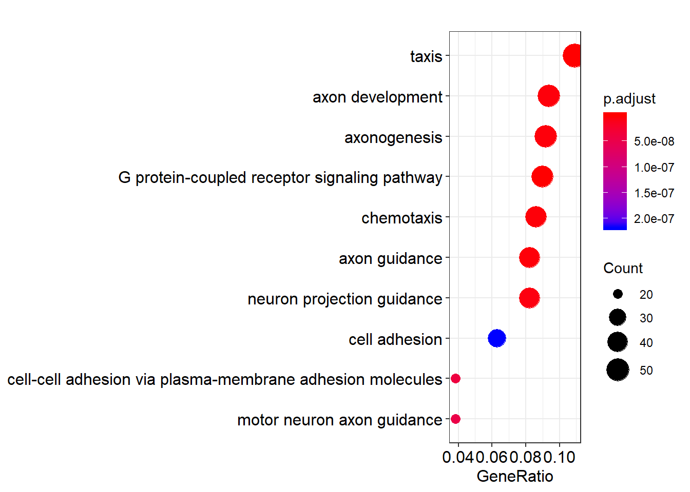
Dotplot of enriched GO terms. Dot size is the number of DE genes in the set; colour is the adjusted p-value.
Enrichment map
Enrichment map organizes enriched terms into a network with edges connecting overlapping gene sets. Mutually overlapping gene sets tend to cluster together, making it easy to identify functional modules.
emapplot(go_enrich)
{kind=link}
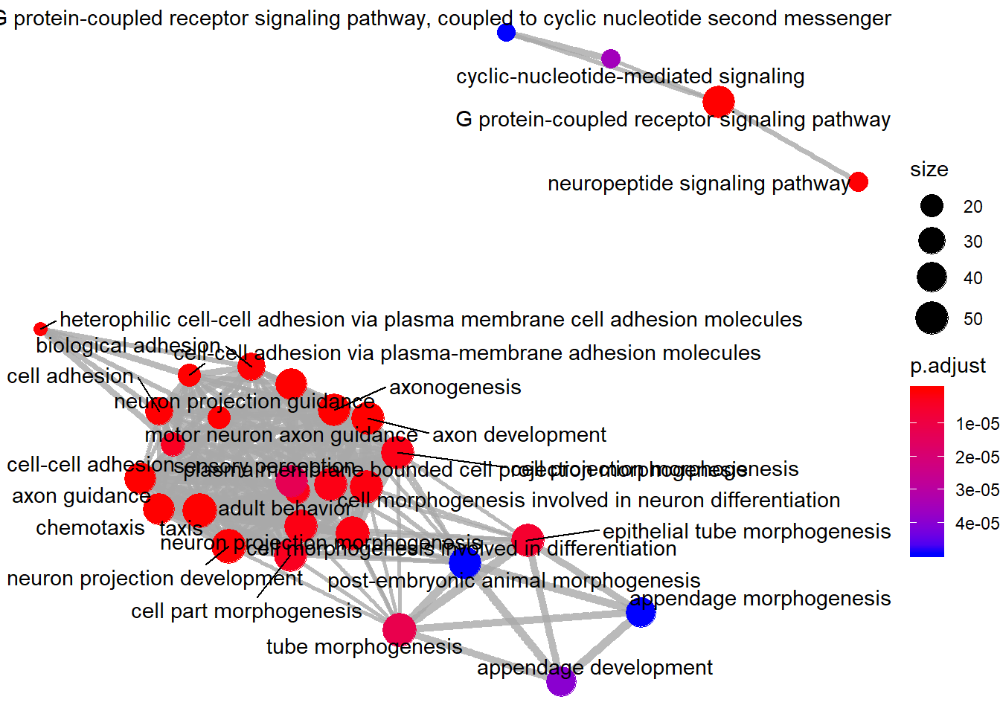
Enrichment map: nodes are GO terms, edges connect terms that share genes. Functional modules cluster together.
Enriched GO induced graph
goplot(go_enrich, showCategory = 10)
{kind=link}
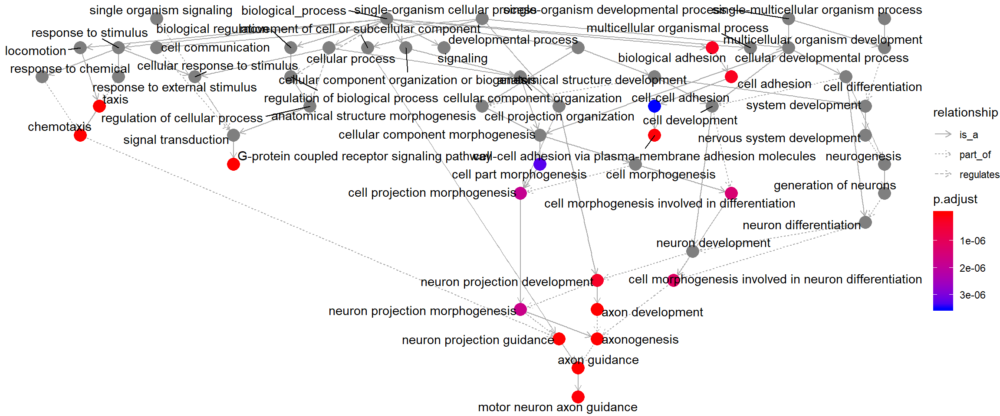
Induced GO DAG for the top 10 enriched terms, showing each term’s parents in the ontology hierarchy.
Category netplot
The cnetplot depicts the linkages of genes and biological concepts
(e.g. GO terms or KEGG pathways) as a network. It is helpful for
seeing which genes are involved in enriched pathways and which genes
belong to multiple annotation categories.
# categorySize can be either 'pvalue' or 'geneNum'
cnetplot(go_enrich, categorySize = "pvalue", foldChange = gene_list)
{kind=link}
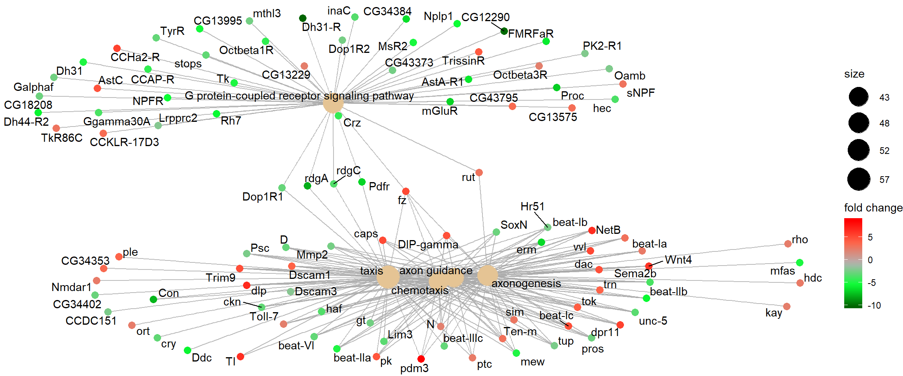
Category netplot: gene nodes are connected to the enriched GO categories they belong to, with fold-change overlaid as colour.
KEGG pathway enrichment
For KEGG pathway enrichment we use the enrichKEGG function. KEGG
requires its own identifier types, so we first convert gene IDs with
bitr (included in clusterProfiler). It is normal for this call
to produce some messages or warnings.
In the bitr function, the param fromType should be the same as
the keyType we used for enrichGO above (the annotation
source). This param is used again in the next two steps: creating
dedup_ids and df2.
toType in the bitr function has to be one of the available
options from keyTypes(org.Dm.eg.db) and must map to one of
'kegg', 'ncbi-geneid', 'ncib-proteinid' or 'uniprot',
because enrichKEGG only accepts one of those four options as its
keytype parameter. In the case of org.Dm.eg.db, none of those
four types are available directly, but 'ENTREZID' is the same as
'ncbi-geneid' for org.Dm.eg.db, so we use 'ENTREZID' for
toType.
As our initial input, we use original_gene_list created above.
Prepare data
# Convert gene IDs for enrichKEGG function
# We will lose some genes here because not all IDs will be converted
ids <- bitr(names(original_gene_list), fromType = "ENSEMBL",
toType = "ENTREZID", OrgDb = "org.Dm.eg.db")
# remove duplicate IDS (here I use "ENSEMBL", but it should be
# whatever was selected as keyType)
dedup_ids = ids[!duplicated(ids[c("ENSEMBL")]),]
# Create a new dataframe df2 which has only the genes which were
# successfully mapped using the bitr function above
df2 = df[df$X %in% dedup_ids$ENSEMBL,]
# Create a new column in df2 with the corresponding ENTREZ IDs
df2$Y = dedup_ids$ENTREZID
# Create a vector of the gene universe
kegg_gene_list <- df2$log2FoldChange
# Name vector with ENTREZ ids
names(kegg_gene_list) <- df2$Y
# omit any NA values
kegg_gene_list <- na.omit(kegg_gene_list)
# sort the list in decreasing order (required for clusterProfiler)
kegg_gene_list = sort(kegg_gene_list, decreasing = TRUE)
# Extract significant results from df2
kegg_sig_genes_df = subset(df2, padj < 0.05)
# From significant results, we want to filter on log2 fold change
kegg_genes <- kegg_sig_genes_df$log2FoldChange
# Name the vector with the CONVERTED ID!
names(kegg_genes) <- kegg_sig_genes_df$Y
# omit NA values
kegg_genes <- na.omit(kegg_genes)
# filter on log2 fold change (PARAMETER)
kegg_genes <- names(kegg_genes)[abs(kegg_genes) > 2]
Parameters
organism KEGG organism code. The full list is here:
KEGG organism list
(need the 3-letter code). We define it as kegg_organism first,
because it is used again below when making the pathview plots.
keyType one of 'kegg', 'ncbi-geneid', 'ncib-proteinid'
or 'uniprot'.
Create the enrichKEGG object
kegg_organism = "dme"
kk <- enrichKEGG(gene = kegg_genes,
universe = names(kegg_gene_list),
organism = kegg_organism,
pvalueCutoff = 0.05,
keyType = "ncbi-geneid")
Visualizations
Barplot
barplot(kk,
showCategory = 10,
title = "Enriched Pathways",
font.size = 8)
{kind=link}
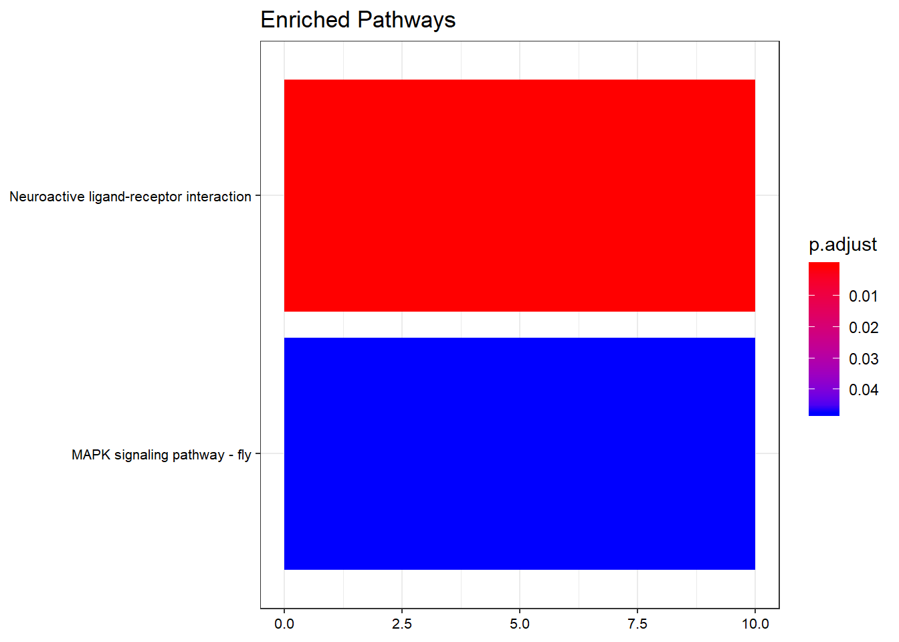
Top 10 enriched KEGG pathways by adjusted p-value.
Dotplot
dotplot(kk,
showCategory = 10,
title = "Enriched Pathways",
font.size = 8)
{kind=link}
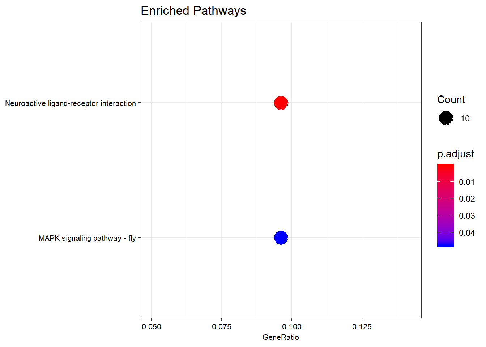
Dotplot of enriched KEGG pathways. Dot size is the DE-gene count per pathway; colour is the adjusted p-value.
Category netplot
The cnetplot depicts the linkages of genes and biological concepts
(here KEGG pathways) as a network.
# categorySize can be either 'pvalue' or 'geneNum'
cnetplot(kk, categorySize = "pvalue", foldChange = gene_list)
{kind=link}
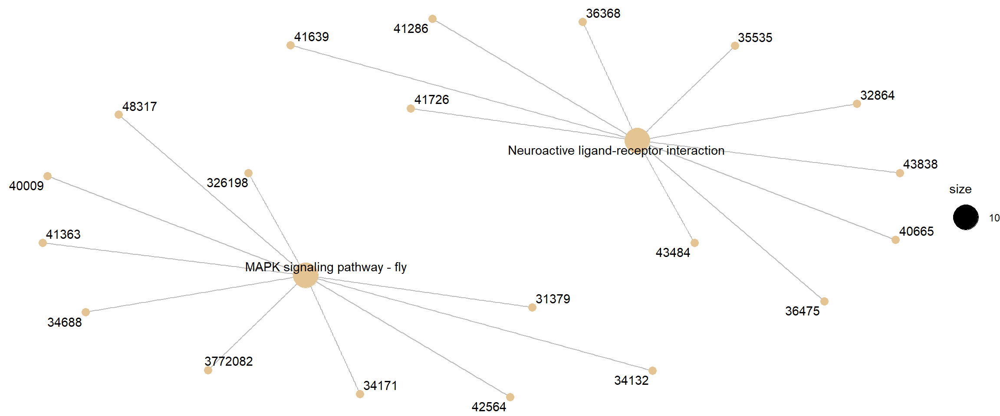
Category netplot for KEGG pathway enrichment, with DE-gene fold-change overlaid as colour.
Pathview
pathview renders an enriched KEGG pathway with your DE genes
overlaid, producing a PNG and a (different) PDF of the pathway map.
Parameters
gene.data The named vector kegg_gene_list created above.
pathway.id The user needs to enter this. Enriched pathways plus
the pathway ID are provided in the enrichKEGG output table above.
species Same as organism above in enrichKEGG, which we
defined as kegg_organism.
gene.idtype The index number (first index is 1) corresponding to
your keytype from this list: gene.idtype.list.
library(pathview)
# Produce the native KEGG plot (PNG)
dme <- pathview(gene.data = gene_list, pathway.id = "dme04080",
species = kegg_organism,
gene.idtype = gene.idtype.list[3])
# Produce a different plot (PDF) (not displayed here)
dme <- pathview(gene.data = gene_list, pathway.id = "dme04080",
species = kegg_organism,
gene.idtype = gene.idtype.list[3],
kegg.native = F)
knitr::include_graphics("dme04080.pathview.png")
{kind=link}
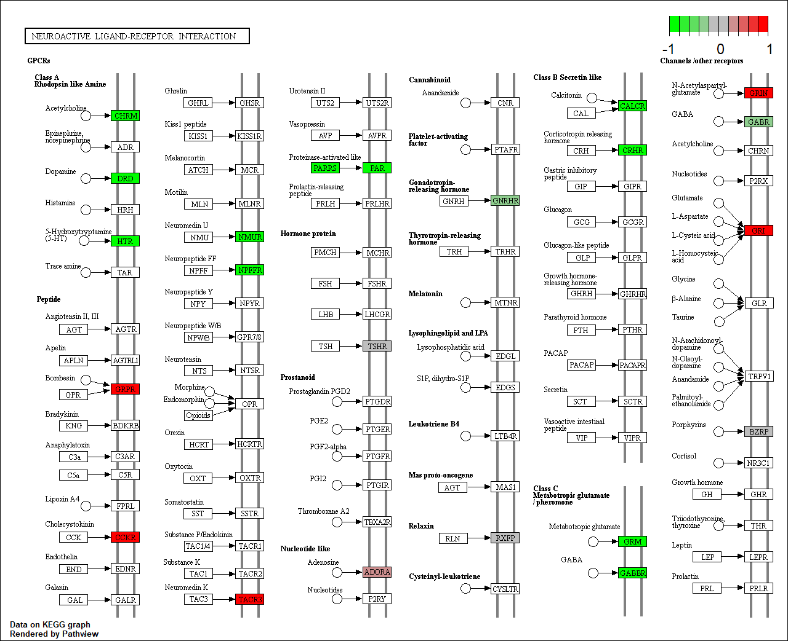
KEGG native enriched pathway plot (dme04080) with DE-gene
fold-change overlaid on pathway nodes.